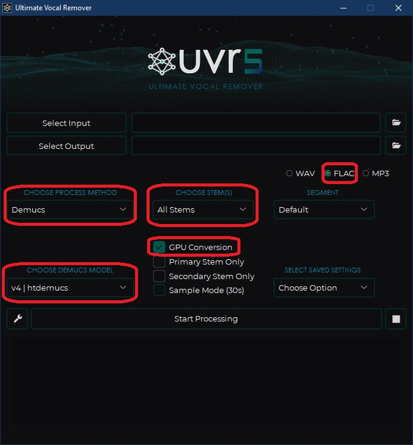
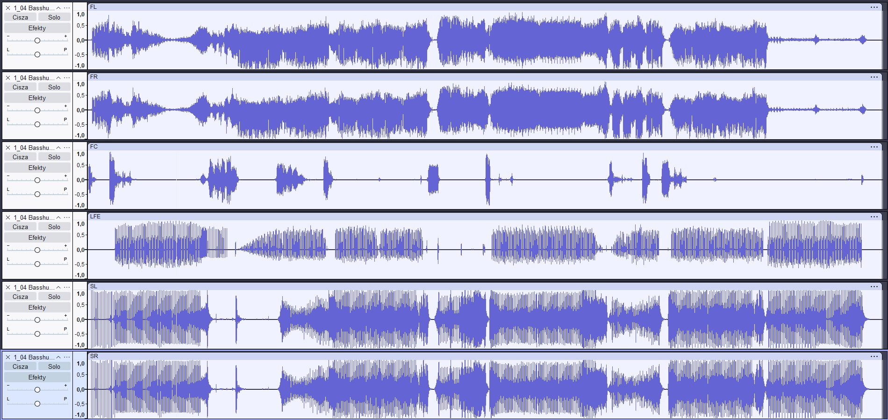
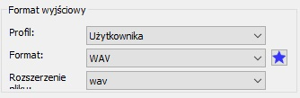
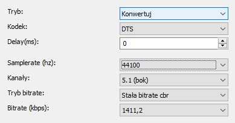

Strona główna
|
O mnie
|
Poradniki
|
Tapety
|
Linki
Oficjalna strona Cattiego
Poradniki
Wróć
Jak zrobić remaster piosenki w FLACu do DTS 5.1?
Aby uzyskać piosenkę stworzoną dla formatu dźwięku 5.1, przygotuj najpierw utwór w formacie FLAC,
który chcesz zremasterować. W międzyczasie zainstaluj 3 niezbędne programy:
Ultimate Vocal Remover
Audacity
- polecam bez MuseHub
XMedia Recode
Część 1 - Ultimate Vocal Remover - wyodrębnienie niezbędnych ścieżek
Uruchom program UVR,
W programie ustaw sobie te opcje wskazane na obrazku:

WYJAŚNIENIE:
Metoda przetwarzania Demucs jest najlepsza i jako jedyna wyodrębni ścieżki takie jak: basy, wokale, perkusję i inne dźwięki.
Konwersja na GPU jest najszybsza i zalecam, jeśli masz mocną kartę graficzną.
Format FLAC zapewni najlepszą bezstratną jakość dźwięku
Rozpocznij konwersję
Część 2 - Audacity - ustawienie ścieżek jak w formacie 5.1
Uruchom program Audacity.
W programie ustaw ścieżki według wskazanej kolejności:
Wrzuć ścieżkę Other, rozdziel do mono i nazwij 1. ściezkę FL, a 2. FR.
Następnie wrzuć Vocals, rozdziel do mono, jedną ze ścieżek mono usuń i nazwij FC.
To samo zrób z ścieżką Bass, ale nazwij LFE.
Wykonaj tą samą czynność ze ścieżką Drums, co ze ścieżką Other, nazwij później SL i SR
Sprawdź, czy masz tak samo jak ja:

Po ustawieniu ścieżek we wskazany sposób, wyeksportuj plik ze wskazanymi ustawieniami w poniższym obrazku:
Wyeksportuj nagranie.
Część 3 - XMedia Recode - konwersja do DTS
W tym programie przekonwertuj stworzonego przez siebie FLACa do DTS lub WAV.
Ustaw format wyjściowy:
lub:

W obu przypadkach ustaw następujące wartości w zakładce
Audio
:

Dodaj do kolejki i przekonwertuj.
Zobacz na YouTubie: